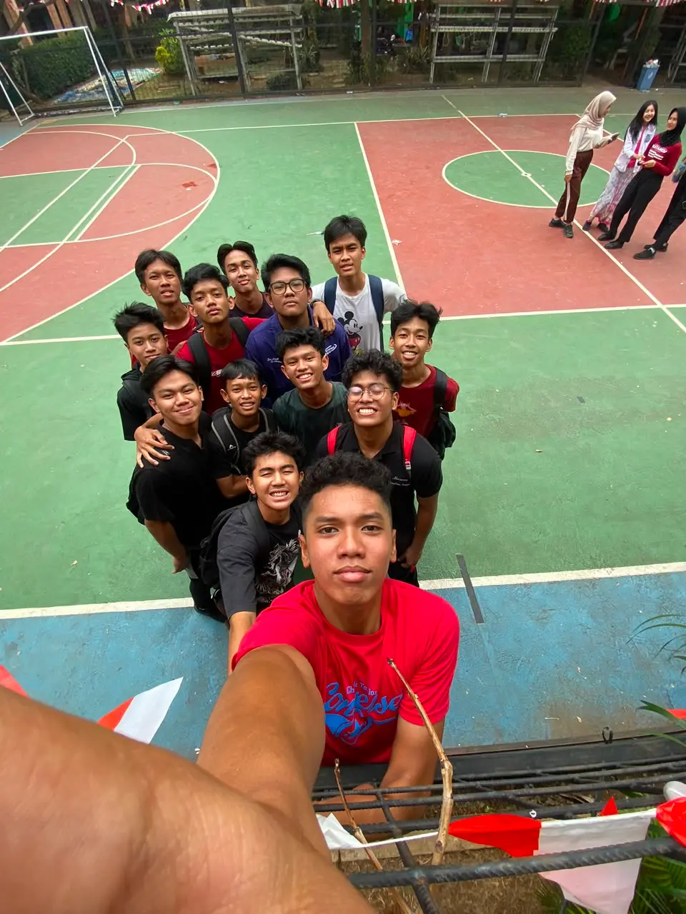
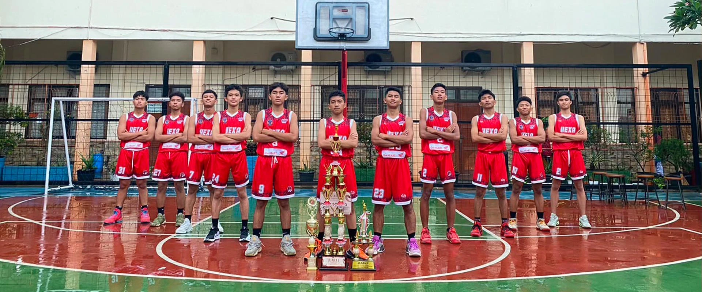
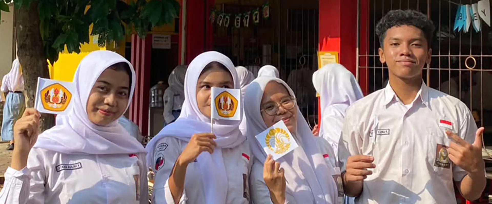
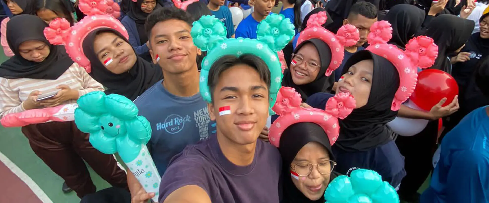
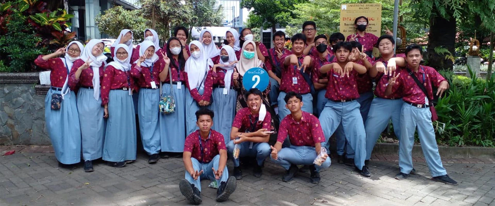

Raih Kampus Impianmu
Program pendampingan siswa SMAN 6 Depok menuju perguruan tinggi terbaik Indonesia.
Timeline Roadmap Seleksi
Tanggal-tanggal penting yang wajib kamu catat untuk SNBP, SNBT, dan Jalur Mandiri.
Pengumuman Siswa Eligible
Sekolah mengumumkan daftar siswa yang memenuhi syarat untuk mendaftar SNBP berdasarkan nilai rapor.
Pendaftaran SNBP
Siswa eligible mendaftar secara online di portal SNPMB. Pilih 2 prodi dengan bijak sesuai nilai dan minat.
Pengumuman Hasil SNBP
Hasil SNBP diumumkan. Yang lolos langsung daftar ulang. Yang belum lolos, bersiap untuk SNBT.
Pendaftaran UTBK-SNBT
Daftarkan diri di portal SNPMB, pilih sesi ujian, dan cetak kartu peserta. Bayar biaya pendaftaran tepat waktu.
Pelaksanaan UTBK
Tes dimulai 12 Juli 2026 di pusat UTBK. Materi meliputi TPS dan Literasi Bahasa. Datang tepat waktu dengan kartu peserta.
Pengumuman Hasil SNBT
Hasil SNBT diumumkan secara online. Segera siapkan dokumen daftar ulang jika dinyatakan lulus.
Jalur Mandiri PTN
Setiap PTN membuka jalur mandiri dengan mekanisme masing-masing. Cek website resmi PTN tujuanmu untuk info lengkap.
Persiapan UTBK
Tools interaktif untuk menemanimu belajar dan menghitung peluang masuk PTN impian.
Berapa lama lagi
UTBK dimulai?
UTBK 2026 dijadwalkan mulai 12 Juli 2026 — pastikan kamu sudah siap!
Kalkulator Target UTBK
Cek seberapa dekat kamu dengan PTN impian
Campus Goes
To School
Program Campus Goes to School hadir untuk menjembatani siswa SMAN 6 Depok dengan dunia perguruan tinggi. Kami menghadirkan kakak alumni dari 10 universitas terbaik Indonesia siap membimbing kamu secara langsung.
- Konsultasi langsung dengan alumni berpengalaman
- Info jalur masuk SNBP, SNBT, dan Mandiri
- Profil lengkap 10 universitas terbaik Indonesia
Top 12 Universitas
Indonesia
Konsultasikan pilihanmu langsung dengan kakak alumni dari masing-masing kampus.

Universitas Indonesia
Reputasi akademik yang sangat kuat di bidang kedokteran, hukum, dan ilmu sosial.

Universitas Gadjah Mada
Universitas riset terbaik nasional dengan pengaruh sosial dan budaya yang kuat.
Institut Teknologi Bandung
Institusi teknik dan sains nomor satu di Indonesia yang banyak melahirkan inovator.
Universitas Airlangga
Sangat unggul dalam bidang ilmu kesehatan, kedokteran, dan farmasi.
IPB University
Pusat pendidikan dan riset terbaik di bidang pertanian, kelautan, dan biosains tropis.
Universitas Padjadjaran
Terkenal dengan Fakultas Kedokteran serta Ilmu Komunikasi yang menjadi favorit nasional.

Universitas Diponegoro
Lulusannya memiliki tingkat serapan dan daya saing yang sangat tinggi di dunia kerja.

Institut Teknologi Sepuluh Nopember
Unggul dalam bidang teknologi maritim, rekayasa teknik, dan desain.
Universitas Brawijaya
Memiliki program studi di bidang ekonomi dan ilmu komputer yang sangat diminati.
Universitas Sebelas Maret
Mengalami pertumbuhan pesat dalam kualitas riset dan pengabdian masyarakat.
Universitas Hasanuddin
PTN terbaik dan pusat pendidikan utama di Indonesia Timur, unggul di bidang kedokteran, hukum, dan ilmu kelautan.
Universitas Sumatera Utara
PTN pionir di Pulau Sumatra dengan reputasi riset sangat baik di bidang kedokteran tropis, farmasi, dan pertanian.
Galeri SMAN 6 DEPOK
Lihat perjalanan Alumni SMAN 6 Depok.





Ada Pertanyaan?
Kami Siap Membantu
Konsultasikan pilihan kampus dan jalur seleksimu langsung dengan Guru BK SMAN 6 Depok. Pesan kamu akan langsung diterima via WhatsApp.
-
Alamat
Jl. Raya Limo No.30, Limo, Kec. Limo, Kota Depok
-
WhatsApp Guru BK
+62 821-1234-5678
-
Email
hexaofficial@sman6depok.sch.id